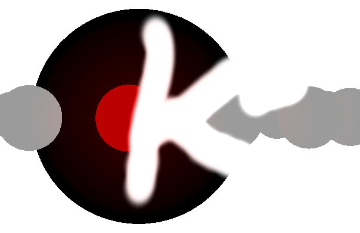
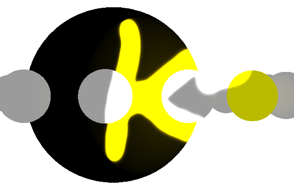

Masks onscreen content based on the alpha color value of a mask texture. More...
Given an RGBA mask texture, content of the backbuffer will be rendered as:
vec4 pixelColor = vec4(inputColor.rgb, inputColor.a * maskColor.a)

A premultiplied alpha variant of the algorithm is also available which can be of use when combining Qt 3D / Kuesa content with 2D QtQuick content (Scene3D). It performs rendering doing:
vec4 pixelColor = vec4(inputColor.rgb / maskColor.a, inputColor.a * maskColor.a);
import Kuesa 1.1 as Kuesa
Kuesa.SceneEnity {
id: root
components: [
RenderSettings {
Kuesa.ForwardRenderer {
postProcessingEffects: [
OpacityMask {
mask: TextureLoader {
source: ":/opacity_mask.png";
generateMipMaps: false
}
}
]
}
}
]
...
}

Specifies whether the masking should be performed using premultipliedAlpha. This can be useful when combining Kuesa and QtQuick with a Scene3D element. It is false by default.